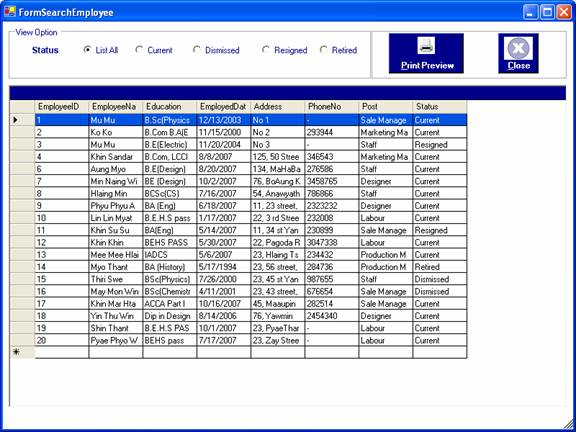
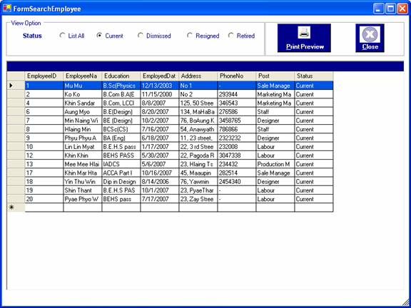
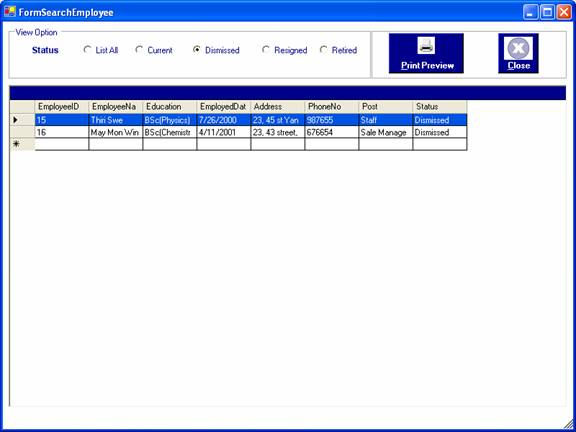
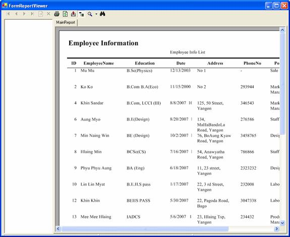

How to process searching for employees by their status
After you successfully log in to the system as a manager or an administrator, you can access employees information by choosing the particular stutus in the form.
To open the form, click on the Search Menu and choose the "Employees Info " . The "Employees Info " form will be appeared. As soon as it appears, employees from all status can be seen.

To browse the list of employees and their information selectively, choose an option in the view option such as current or dismissed or retired or resigned.


To view as a report format, click "Print Preview" button or Alt+P .

To close the form, click "Close" button or Alt+C.